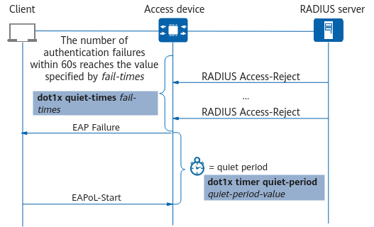

In 802.1X authentication, timers are used to control the authentication process. The following describes these timers.
During 802.1X authentication, the access device sends an EAP-Request/Identity packet to the client to request the user name. The maximum number of times the EAP-Request/Identity packet can be retransmitted and the interval for retransmitting the packet are configured using a command.
In Figure 1, after the EAP-Request/Identity packet sent by the access device times out, the device sends an authentication failure packet to the client. Generally, when a client fails the authentication, the failover mechanism (granting specific access rights) is enabled on the access device to ensure that the client can continue to access the network.
The timer is configured using the dot1x timer tx-period tx-period command, and the maximum number of times that the access device retransmits request packets is configured using the dot1x retry max-retry-value command, if MAC address bypass authentication is not configured. The EAP-Request/Identity packet timeout period is calculated using the following formula: Timeout = (max-retry-value + 1) * tx-period-value.
In Figure 2, after MAC address bypass authentication is configured, the access device performs 802.1X authentication first and starts the timer configured using the dot1x timer mac-bypass-delay delay-time-value command. If 802.1X authentication is not successful when the timer expires, the access device performs MAC address authentication on users. To set the maximum number of times the access device retransmits authentication requests to 802.1X users, run the dot1x retry max-retry-value command. The retransmission interval is the integer of the result calculated using the following formula: delay-time-value/(max-retry-value + 1).
The access device sends an EAP-Request/MD5-Challenge packet to an 802.1X client and starts the authentication timeout timer for the client. If the device does not receive any response from the client before the timer expires, the access device retransmits the EAP-Request/MD5-Challenge packet to the client. If the device still does not receive any response after retransmitting the packet for the maximum number of times (configured using the dot1x retry max-retry-value command), the device stops retransmitting the packet. This prevents repeated retransmission of authentication requests, saving many resources.
In Figure 3, after the EAP-Request/MD5 Challenge packet sent by the access device times out, the device sends an authentication failure packet to the client. Generally, when a client fails the authentication, the failover mechanism (MAC address authentication or granting specific access rights) is enabled on the access device to prevent interrupted network access. The EAP-Request/MD5 Challenge packet timeout period is calculated using the following formula:
Timeout = (max-retry-value + 1) * client-timeout-value
If the number of authentication failures of a user within 60 seconds exceeds the value specified using the dot1x quiet-times fail-times command, the device sets the user to the quiet state for a period of time specified using the dot1x timer quiet-period quiet-period-value command. Within the specified quiet period, the device discards the 802.1X authentication request of the user to prevent frequent authentication failures of the user in a short period of time.
